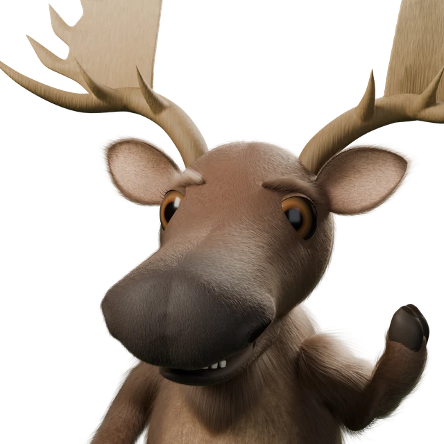
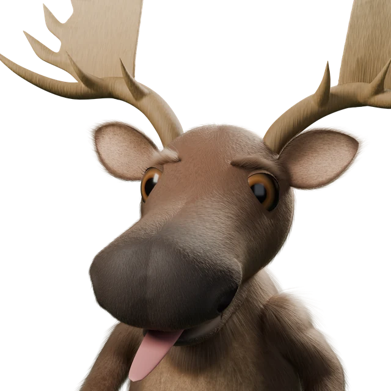
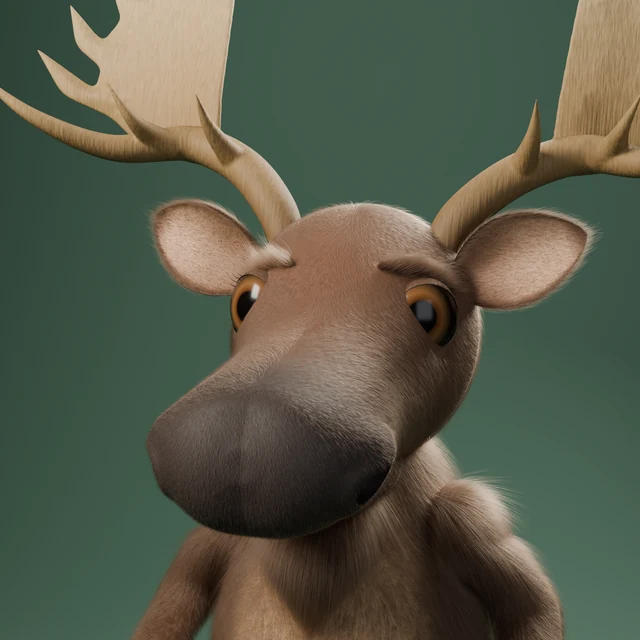
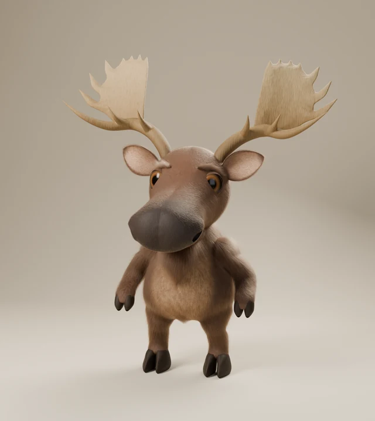

One Buddy. Ready for your scene.
Transparent portraits for website layouts and illustrations. A green circle for the small avatar. The same soft coat, focused eyes and gentle smile.

The preview color belongs to the page. It is not included in the transparent image.
One portrait, seven expressions.


Studio scenes, when the layout calls for one
The green portrait and warm studio remain available as composed scenes.

